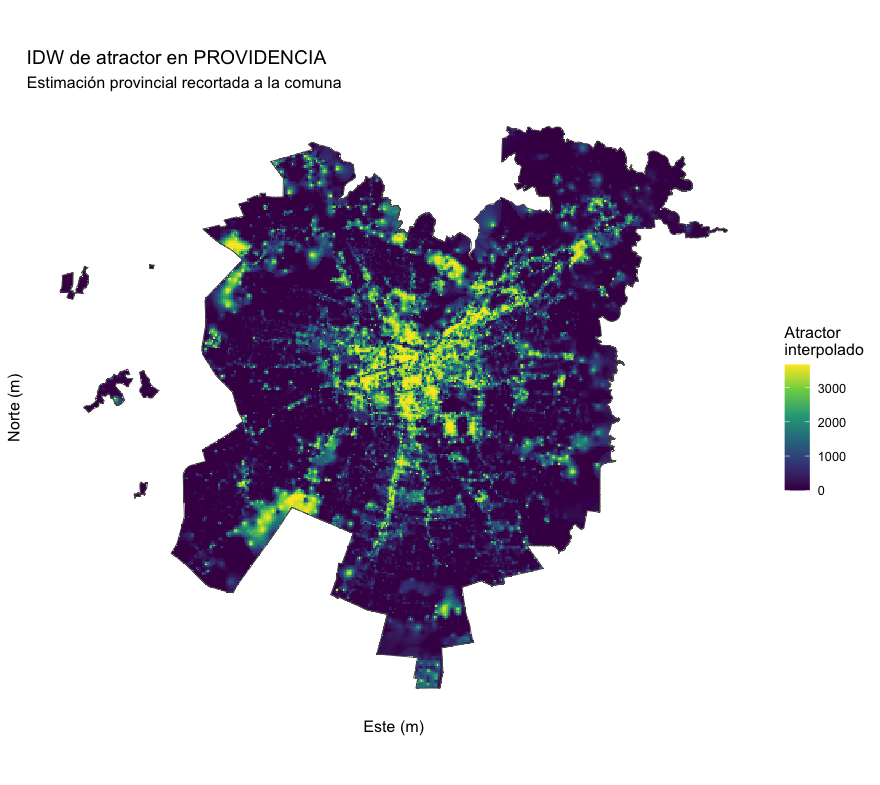
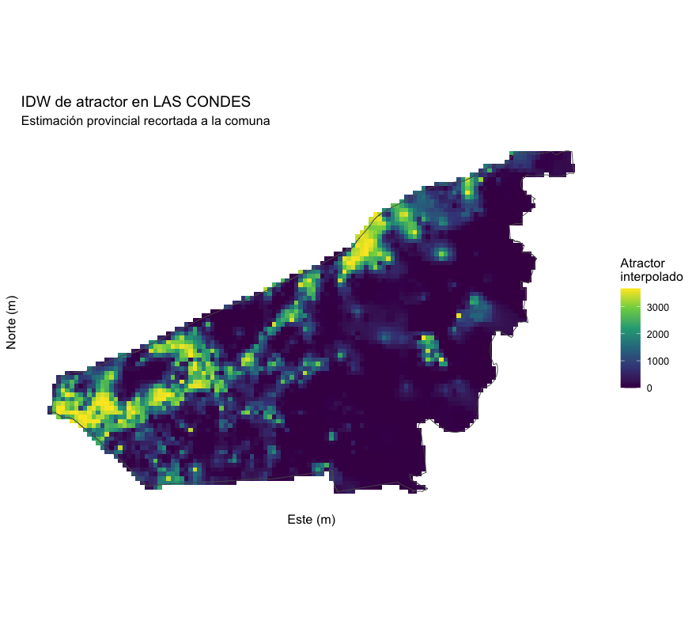
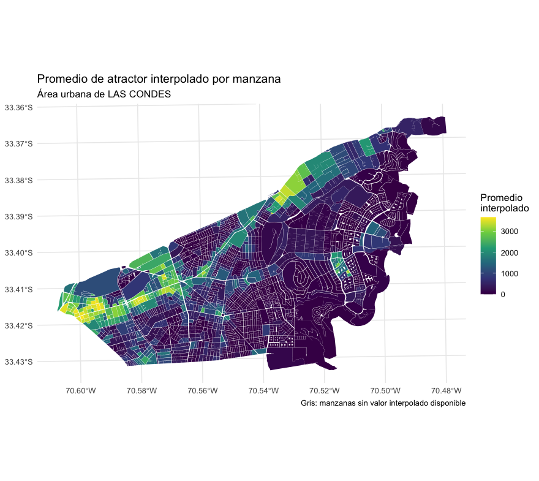
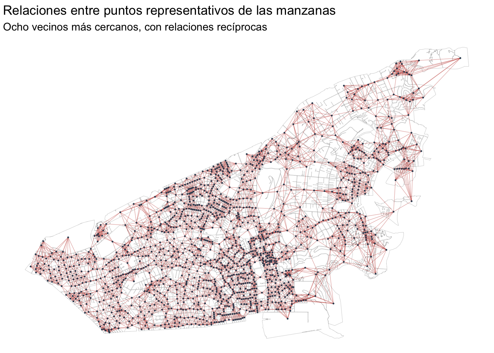
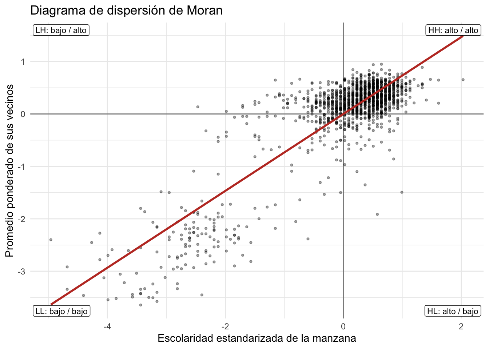
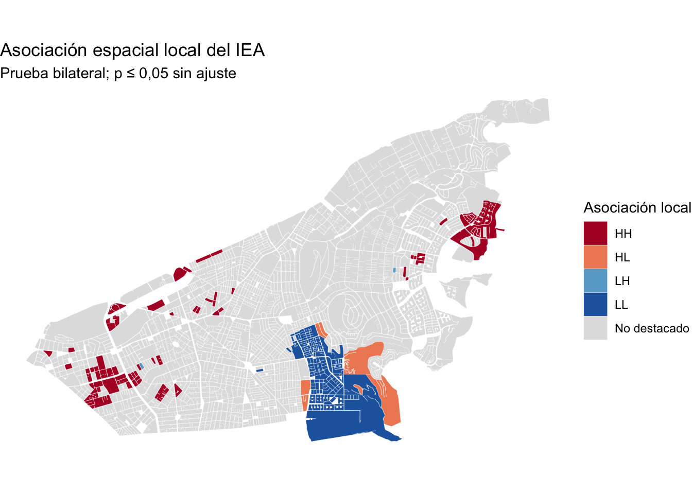

Tarea 2
Inferencia y autocorrelación espacial
Antecedentes
- Publicación: 27 de octubre de 2026.
- Entrega: 8 de noviembre de 2026.
- Modalidad: individual.
- Ponderación: 60 % de la nota final.
- Formato: un informe en PDF, PPTX, Markdown o HTML, acompañado del código utilizado. El informe debe contener mapas legibles, tablas de resultados, decisiones metodológicas e interpretación.
- Atraso: se descontarán 0,5 puntos por cada 12 horas de retraso.
Parte 1: interpolación inversa a la distancia (3 puntos)
La IDW estima valores entre puntos observados dando más peso a los puntos cercanos. Revisa la explicación del método en Interpolación Inversa a la Distancia Ponderada (IDW). La imagen siguiente ilustra la idea general; no representa los datos de esta tarea.
Prepara el ámbito provincial y revisa los datos. Define el área urbana de la provincia de Santiago con
data/censo/zonas_urb_consolidadas.rdsy selecciona todos los puntos dedata/sii/urbes.shpque caen en ella, sin filtrar todavía por comuna. Comprueba que puntos y límite coincidan espacialmente y trabajen en un sistema de coordenadas proyectadas en metros. Informa cuántos puntos usarás. Examina valores faltantes, ceros y extremos decomercio,oficinasyatractor; si modificas algún valor extremo (método windsorizacion), deja claro que ya no interpolas los datos originales.Calcula tres superficies IDW provinciales (1,5 puntos). Interpola por separado los campos
comercio,oficinasyatractorusando los puntos del área urbana provincial. Usa una grilla provincial común para las tres superficies. Informa la resolución de celda en metros, la potencia de IDW y el máximo de vecinos empleados.

- Elige la comuna y construye tres indicadores por manzana (1,5 puntos). Después de calcular las tres IDW provinciales, elige una comuna urbana de la provincia (
data/censo-2024/censo_2024_nacional.gpkg). Recorta el raster de IDW provincial por el límite comunal. Calcula cada indicador por las manzanas mediante una estadística zonal que elijas, por ejemplo el promedio (exact_extract). Presenta un mapa de la IDW recortada y un mapa del indicador por cada variable. Describe dónde aparecen valores altos y bajos y en qué difieren las superficies. Para las variables numéricas usa paletas continuas.


Interpretación necesaria: estos indicadores resumen valores interpolados, no mediciones directas dentro de cada manzana. La hipótesis es que estos actractores de comercio y oficina pueden polos de atracción de población flotante.
Parte 2: autocorrelación espacial (3 puntos)
Trabaja con las manzanas urbanas del Censo 2024 disponibles en results/R13_Santiago_urbano_ind_socioeconomicos_2024.rds. Revisa los conceptos de vecindad, Moran global y Moran local en Construcción de la matriz de vecindad, Índice de Moran global y Índice de Moran local.
Selecciona la variable y plantea una hipótesis (0,5 puntos). Elige una comuna urbana distinta de Las Condes y un indicador disponible en la base, por ejemplo
IEA,ISVoIVI. Indica qué mide y en qué dirección se interpreta; no supongas que un valor alto significa siempre mayor necesidad. Muestra su distribución y un mapa inicial. Excluye valores faltantes y unidades sin población antes de construir la vecindad, e informa cuántas manzanas quedaron.Construye los pesos espaciales (0,5 puntos). Parte de los ocho vecinos más próximos de cada manzana y convierte las relaciones en recíprocas, como se explica en el capítulo. Dentro de esa vecindad, asigna a cada vecino un peso proporcional a su población
n_pery normaliza los pesos de cada manzana para que sumen uno. Informa el criterio de vecindad, el número de unidades y el rango de cantidad de vecinos. Explica qué cambia al ponderar por población: no cambia quién es vecino, sino cuánto influye cada vecino.

- Evalúa Moran global (1 punto). Calcula el índice y una prueba con 999 permutaciones usando los pesos anteriores. Presenta el estadístico, el valor p y un diagrama de dispersión de Moran con sus cuadrantes. Explica qué indican el signo del índice, la prueba y los cuadrantes para la comuna estudiada. Un resultado global no localiza por sí solo los sectores destacados.

- Evalúa Moran local (1 punto). Calcula el índice por manzana con la misma variable y los mismos pesos. Usa un umbral de valor p ≤ 0,05 e identifica HH, LL, HL, LH y las unidades no destacadas. Los cuadrantes dependen del valor de la manzana y del promedio ponderado de sus vecinos; el valor p decide si se destaca la asociación local. Presenta un mapa con colores categóricos y una tabla con el número de manzanas en cada categoría. Interpreta al menos un patrón relevante para una pregunta de política pública e indica una limitación de los datos o de las múltiples pruebas locales.

Al cerrar el informe, distingue lo que muestran los mapas de lo que todavía habría que comprobar con otras fuentes antes de recomendar una intervención.